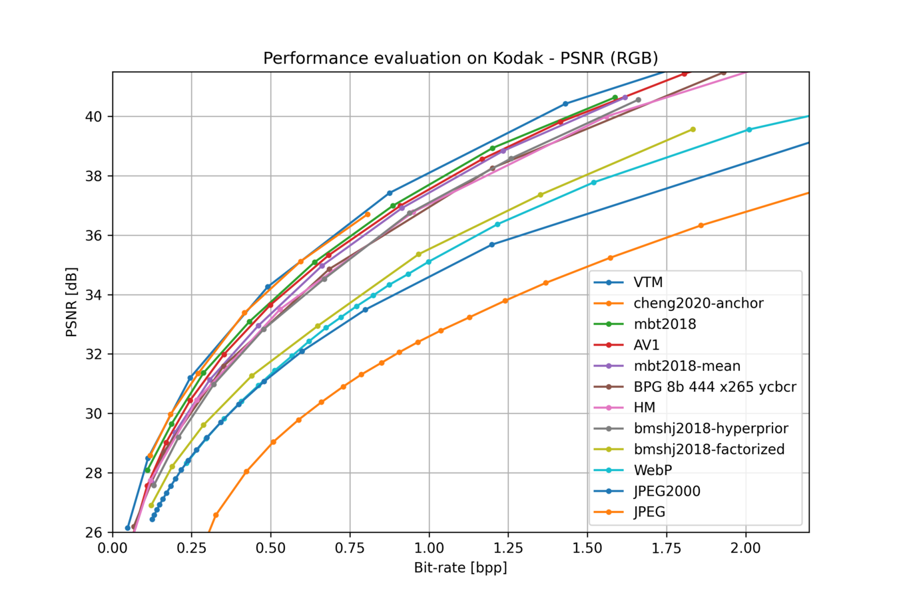

CompressAI (compress-ay) 是用于端到端压缩研究的 PyTorch 库和评估平台。
概念
CompressAI 建立在 PyTorch 之上并提供：
CompressAI 旨在通过提供资源来研究、实施和评估基于机器学习的压缩编解码器，让更多的研究人员为学习图像和视频压缩领域做出贡献。
模型Zoo CompressAI 包括一些用于压缩任务的预训练模型。 有关更多文档，请参阅 Model Zoo 部分。
在不同比特率失真点和不同指标下训练的可用模型列表预计在未来会增加。
11pip install compressai运行 train.py –help 以列出可用选项。
171 -h, --help 显示帮助信息2 -m, --model 模型结构{bmshj2018-factorized,bmshj2018-hyperprior,mbt2018-mean,mbt2018,cheng2020-anchor,cheng2020-attn} 3 -d, --dataset 训练集4 -e, --epochs 训练总轮次5 -lr, --learning-rate 学习率6 -n, --num-workers 数据加载线程数7 --lambda Bit-rate distortion参数8 --batch-size 训练批大小9 --test-batch-size 测试批大小10 --aux-learning-rate 辅助损失学习率11 --patch-size 训练裁剪的patch大小 12 --cuda 使用cuda13 --save 模型保持到硬盘14 --seed SEED 随机种子15 --clip_max_norm 梯度裁剪最大范数16 --checkpoint 保存点的路径17 示例：
11python3 examples/train.py -m mbt2018-mean -d /path/to/image/dataset --batch-size 16 -lr 1e-4 --save --cuda训练模型后，您需要运行 update_model 脚本来更新熵瓶颈（bottlenecks）的内部参数：
11python -m compressai.utils.update_model --architecture ARCH checkpoint_best_loss.pth.tar注：在 examples/ 路径下执行该命令行
这将修改与执行实际熵编码所需的学习累积分布函数 (CDF) 相关的缓冲区。
运行
python -m compressai.utils.update_model --help获取完整的选项列表。
或者，您可以在训练脚本结束时调用 CompressionModel 或 EntropyBottleneck 实例的 update() 方法，然后再保存模型检查点。
更新模型检查点后，您可以使用 eval_model 获取其在图像数据集上的性能：
11python -m compressai.utils.eval_model checkpoint /path/to/image/dataset -a ARCH -p path/to/checkpoint-xxxxxxxx.pth.tar运行
python -m compressai.utils.eval_model --help获取完整的选项列表。
默认情况下，CompressAI 使用范围不对称数字系统 (ANS, Asymmetric Numeral Systems ) 熵编码器。 您可以使用 compressai.available_entropy_coders() 获取已实现的熵编码器的列表，并通过 compressai.set_entropy_coder() 更改默认的熵编码器。
1.将图像张量压缩为比特流：
31x = torch.rand(1, 3, 64, 64)2y = net.encode(x)3strings = net.entropy_bottleneck.compress(y)2.将比特流解压为图像张量：
31shape = y.size()[2:]2y_hat = net.entropy_bottleneck.decompress(strings, shape)3x_hat = net.decode(y_hat)训练自己的模型 在本教程中，我们将使用 CompressAI 中预定义的一些模块和层来实现自定义的auto encoder结构。
让我们使用 EntropyBottleneck 模块构建一个简单的auto encoder，包含编码器的 3 个卷积、解码器的 3 个转置反卷积和 GDN 激活函数：
451import torch.nn as nn2import torch3
4from compressai.entropy_models import EntropyBottleneck5from compressai.layers import GDN6from compressai.models import CompressionModel7from compressai.models.utils import conv, deconv8
9class Network(nn.Module):10 def __init__(self, N=128):11 super().__init__()12 self.entropy_bottleneck = EntropyBottleneck(N)13 self.encode = nn.Sequential(14 nn.Conv2d(3, N, stride=2, kernel_size=5, padding=2),15 GDN(N), # 广义分歧归一化16 nn.Conv2d(N, N, stride=2, kernel_size=5, padding=2),17 GDN(N),18 nn.Conv2d(N, N, stride=2, kernel_size=5, padding=2),19 )20
21 self.decode = nn.Sequential(22 nn.ConvTranspose2d(N, N, kernel_size=5, padding=2, output_padding=1, stride=2),23 GDN(N, inverse=True),24 nn.ConvTranspose2d(N, N, kernel_size=5, padding=2, output_padding=1, stride=2),25 GDN(N, inverse=True),26 nn.ConvTranspose2d(N, 3, kernel_size=5, padding=2, output_padding=1, stride=2),27 )28
29 def forward(self, x):30 y = self.encode(x)31 y_hat, y_likelihoods = self.entropy_bottleneck(y)32 x_hat = self.decode(y_hat)33 return x_hat, y_likelihoods34
35if __name__ == '__main__':36 net = Network()37 net = net.cuda()38 # 查看entropy_bottleneck层有哪些参数39 for n, p in net.named_parameters():40 print(n)41 42 x = torch.randn((8, 3, 360, 640)).cuda()43 x_hat, y_likelihoods = net(x)44 print(x_hat.shape)45 print(y_likelihoods.shape)步长卷积减少张量的空间维度，同时增加通道数量（这有助于学习更好的潜在（latent）表示）。 瓶颈模块(论文)用于在训练时获得latent的可微熵估计。
也可以用
CompressionModel基类来实现网络
1.率失真损失
我们将定义一个简单的率失真损失，它最大化 PSNR 重建 (RGB) 并最小化量化latent (y_hat) 的长度（以bit为单位）。
标量
191import math2import torch.nn as nn3import torch.nn.functional as F4
5x = torch.rand(1, 3, 64, 64)6net = Network()7x_hat, y_likelihoods = net(x)8
9# bitrate of the quantized latent10N, _, H, W = x.size()11num_pixels = N * H * W12bpp_loss = torch.log(y_likelihoods).sum() / (-math.log(2) * num_pixels) 13# 算术编码器是一种接近最优的熵编码器，这使得在训练期间使用y的熵作为码率估计成为可能。观测的y_likelihoods越大（不确定性越小，相同维度输入经过熵编码后码字越少），算术编码用的码字越少。14
15# mean square error16mse_loss = F.mse_loss(x, x_hat)17
18# final loss term19loss = mse_loss + lmbda * bpp_loss可以训练可以处理多个比特率失真点的架构，但这超出了本教程的范围。 请参阅这篇论文。
2.辅助损失
需要训练熵瓶颈的参数以最小化latent元素的密度模型评估。 辅助损失可通过 entropy_bottleneck 层访问：
11aux_loss = net.entropy_bottleneck.loss()最小化辅助损失是必要的，可以网络训练期间或之后进行。
为了同时训练压缩网络和熵瓶颈密度估计，我们需要两个优化器。
61import torch.optim as optim2
3parameters = set(p for n, p in net.named_parameters() if not n.endswith(".quantiles"))4aux_parameters = set(p for n, p in net.named_parameters() if n.endswith(".quantiles"))5optimizer = optim.Adam(parameters, lr=1e-4)6aux_optimizer = optim.Adam(aux_parameters, lr=1e-3)也可以通过
torch.optim.Optimizerparameter groups来定义一个优化器。
如下：
151x = torch.rand(1, 3, 64, 64)2for i in range(10):3 optimizer.zero_grad()4 aux_optimizer.zero_grad()5
6 x_hat, y_likelihoods = net(x)7 # ...8 # compute loss as before9 # ...10 loss.backward()11 optimizer.step()12
13 aux_loss = net.aux_loss()14 aux_loss.backward()15 aux_optimizer.step()compressai.available_entropy_coders() ：返回可用的熵编码器列表。
compressai.get_entropy_coder() ：返回用于编码比特流的默认熵编码器的名称。
compressai.set_entropy_coder(entropy_coder) ：指定用于对比特流进行编码的默认熵编码器。
范围不对称数字系统 (rANS) 绑定。 rANS 可用于替代传统范围编码器。
编码器：class compressai.ans.RansEncoder
解码器：class compressai.ans.RansDecoder
class compressai.datasets.ImageFolder(root, transform=None, split='train')
加载图像文件夹数据库，训练和测试图像样本分别存放在不同的目录中。
class compressai.datasets.VideoFolder(root, rnd_interval=False, rnd_temp_order=False, transform=None, split='train')
加载视频文件夹数据库。 训练和测试视频剪辑存储在包含许多子目录的目录中。
熵瓶颈：
class compressai.entropy_models.EntropyBottleneck(channels: int)
高斯条件：
class compressai.entropy_models.GaussianConditional()
均来自论文
MaskedConv2d: 屏蔽未来“看不见的”像素, 用于构建自回归网络组件，参见论文。
GDN: Generalized Divisive Normalization layer，参见论文。
GDN1: 简化的GDN层，参见论文。
AttentionBlock：自注意力模块，参见论文。
QReLU: 根据给定位深clamp输入，参见论文。
GDN, GDN1, QReLU的作者是有重合的。
CompressionModel：用于构造具有至少一个熵瓶颈模块的auto-encoder的基类。
11class compressai.models.CompressionModel(entropy_bottleneck_channels, init_weights=None)2018：FactorizedPrior，ScaleHyperprior论文，MeanScaleHyperprior，JointAutoregressiveHierarchicalPriors
2020：Cheng2020Anchor，Cheng2020Attention论文，ScaleSpaceFlow论文
compressai.ops.ste_round(x: torch.Tensor)：使用非零梯度进行舍入。 通过用恒等函数代替导数来近似梯度，参见论文。
class compressai.ops.LowerBound(bound: float)：下限运算符，使用自定义梯度计算 torch.max(x, bound)。当 x 向边界移动时，导数被恒等函数代替，否则梯度保持为零。
class compressai.ops.NonNegativeParametrizer()：非负重参数化，用于训练期间的稳定性。
RGB2YCbCr，YCbCr2RGB，YUV420To444，YUV444To420
这里Kr, Kg, Kb = YCBCR_WEIGHTS["ITU-R_BT.709"]
模型：{bmshj2018-factorized,bmshj2018-hyperprior,mbt2018-mean,mbt2018,cheng2020-anchor,cheng2020-attn}
| Metric | Loss function |
|---|---|
| MSE | |
| MS-SSIM |
| Quality | 1 | 2 | 3 | 4 | 5 | 6 | 7 | 8 |
|---|---|---|---|---|---|---|---|---|
| MSE | 0.0018 | 0.0035 | 0.0067 | 0.0130 | 0.0250 | 0.0483 | 0.0932 | 0.1800 |
| MS-SSIM | 2.40 | 4.58 | 8.73 | 16.64 | 31.73 | 60.50 | 115.37 | 220.00 |
我的理解，表里的数字是
。这个应该就是一个核心的概念——熵模型。
对于不同质量等级，网络结构的通道数也会设计得不一样。
{'bmshj2018-factorized': {1: (128, 192), 2: (128, 192), 3: (128, 192), 4: (128, 192), 5: (128, 192), 6: (192, 320), 7: (192, 320), 8: (192, 320)}, 'bmshj2018-hyperprior': {1: (128, 192), 2: (128, 192), 3: (128, 192), 4: (128, 192), 5: (128, 192), 6: (192, 320), 7: (192, 320), 8: (192, 320)}, 'mbt2018-mean': {1: (128, 192), 2: (128, 192), 3: (128, 192), 4: (128, 192), 5: (192, 320), 6: (192, 320), 7: (192, 320), 8: (192, 320)}, 'mbt2018': {1: (192, 192), 2: (192, 192), 3: (192, 192), 4: (192, 192), 5: (192, 320), 6: (192, 320), 7: (192, 320), 8: (192, 320)}, 'cheng2020-anchor': {1: (128,), 2: (128,), 3: (128,), 4: (192,), 5: (192,), 6: (192,)}, 'cheng2020-attn': {1: (128,), 2: (128,), 3: (128,), 4: (192,), 5: (192,), 6: (192,)}}
The number of channels for the convolutionnal layers and the entropy bottleneck depends on the architecture and the quality parameter (~targeted bit-rate). For low bit-rates (<0.5 bpp), the literature usually recommends 192 channels for the entropy bottleneck, and 320 channels for higher bitrates. The detailed list of configurations can be found in
compressai.zoo.image.cfgs.
例如cheng2020-anchor：
compressai.zoo.cheng2020_anchor(quality, metric='mse', pretrained=False, progress=True, **kwargs)，参数如下：
性能：Cheng2020Anchor > JointAutoregressiveHierarchicalPriors > MeanScaleHyperprior > ScaleHyperprior > FactorizedPrior，
具体参见率失真曲线图:

注：VTM是VVC的参考软件。
上面提到CompressAI提供了许多智能编码的模型，全都属于有损压缩+熵编码。
有损压缩和熵估计模型部分使用神经网络进行非线性变换，这个我们熟悉。所以感觉重点需要研究的恰恰是无损压缩（熵编码）。
比如，有仓库将CompressAI的该部分摘出来研究。
数学基础：
设
而
统计学术语：
随机变量(random variable)：随机变量实际上是一个函数，是随机过程映射到数值的函数
离散随机变量和PMF：如果随机变量X只可能取有限个或至多可列个值，则称X为离散随机变量。一般我们使用PMF来描述离散随机变量的概率函数。
PMF：概率质量函数(probability mass function)，在概率论中，概率质量函数是离散随机变量在各特定取值上的概率。
高中学习时也称其分布律。高中没有学习微积分，所以没法研究连续随机变量。
连续随机变量
在一定区间内可以任意取值的变量叫连续变量。
一般我们使用PDF来描述连续随机变量的概率分布。
PDF：概率密度函数(probability density function)，连续型随机变量的概率密度函数是一个描述某个确定的取值点附近的可能性的函数。
而可能性是一种趋势（密度），只有对连续随机变量的取值进行积分后才是概率。
为了便于概率的计算，我们引入CDF的概念。
CDF：累积分布函数(cumulative distribution function)，也简称分布函数，是概率密度函数的积分，能完整描述一个实随机变量X的概率分布。
CDF是PDF的（从负无穷-∞到当前值的）积分，PDF是CDF的导数。
CDF相当于其左侧的面积，也相当于小于该值的概率，负无穷的CDF值为0，正无穷的CDF值总为1。
代码实现：
我验证了两种实现方式 ① feature_probs_api，② feature_probs_manual
xxxxxxxxxx1#!/usr/bin/env python2
3import torch4
5def feature_probs_api(feature, sigma, mu):6 # 零均值7 # mu = torch.zeros_like(sigma) 8 sigma = sigma.clamp(1e-10, 1e10)9 # gaussian = torch.distributions.laplace.Laplace(mu, sigma)10 gaussian = torch.distributions.normal.Normal(mu, sigma)11 likelihood = gaussian.cdf(feature + 0.5) - gaussian.cdf(feature - 0.5)12 # 算术编码就是一个位置，给一个熵估计，只有教学时才以各位置统一均匀的概率为例。然后bin_width/2 = 0.513 # total_bits = torch.sum(torch.clamp(-1.0 * torch.log(probs + 1e-10) / math.log(2.0), 0, 50))14 return likelihood15
16def feature_probs_manual(feature, sigma, mu):17 sigma = sigma.clamp(1e-10, 1e10)18
19 # values = feature - mu20 # CompressAI用的 (-abs(feature - mu) ± 0.5) / sigma，效果是一样的。因为归一化到零均值后，这俩区间是对称的。21 values = -torch.abs(feature - mu)22 upper = (values + .5) / sigma 23 lower = (values - .5) / sigma 24 25 likelihood = _standardized_cumulative(upper) - _standardized_cumulative(lower)26
27 return likelihood28
29
30def _standardized_cumulative(inputs):31 half = torch.tensor(.5)32 const = torch.tensor(-(2 ** -0.5))33 return half * torch.erfc(const * inputs)34
35# Tables to CDF of channels36y_hat = torch.randn(1,3,2,2)*337table_range = 838tables = torch.arange(-table_range, table_range)39tables_y = tables.repeat(3, 2, 2, 1).permute(3,0,1,2)40# feature = torch.randn(1,1,2,2)41sigma = torch.randn(1,3,2,2).abs().repeat(table_range*2, 1, 1, 1)42mu = torch.randn(1,3,2,2).repeat(table_range*2, 1, 1, 1)43
44# print(tables_y.shape, sigma.shape, mu.shape)45pmf_y = feature_probs_api(tables_y, sigma, mu)46print('torch.distributions likelihood:', pmf_y.shape)47pmf_y = pmf_y.permute(1,2,3,0).unsqueeze(0)48cdf_y = torch.cumsum(pmf_y , dim=-1)49cdf_y_0 = torch.zeros(cdf_y.shape[:-1]).unsqueeze(-1)50cdf_y = torch.cat([cdf_y_0, cdf_y], dim=-1)51cdf_y = cdf_y.clip(min=0, max=1)52
53import torchac54
55# Encode to bytestream.56output_cdf = cdf_y # Get CDF from your model, shape B, C, H, W, Lp57sym = y_hat.type(torch.int16).cpu() + table_range # Get the symbols to encode, shape B, C, H, W.58# symbols的格式要求是0,1,2,3,...。我们学出来的y_hat在[-table_range, table_range-1]，加上table_range正好。59byte_stream = torchac.encode_float_cdf(output_cdf, sym, check_input_bounds=True)60
61# Number of bits taken by the stream62real_bits = len(byte_stream) * 863
64# Write to a file.65with open('outfile.b', 'wb') as fout:66 fout.write(byte_stream)67
68print(byte_stream)69
70# Read from a file.71with open('outfile.b', 'rb') as fin:72 byte_stream = fin.read()73
74
75# Decode from bytestream.76sym_out = torchac.decode_float_cdf(output_cdf, byte_stream)77print(sym)78print(sym_out)79
80# Output will be equal to the input.81assert sym_out.equal(sym)算术编码：
L3C-PyTorch and pip3 install torchac，作者Fabian专门研究基于学习的无损编码。
例如ScaleSpaceFlow(论文)：
compressai.zoo.ssf2020(quality, metric='mse', pretrained=False, progress=True, **kwargs)，参数含义与图像压缩一致。
如果我作为公司团队的一员参加，我是否有资格获得奖金？ 不会。您有资格获得奖项和获奖证书，但我们会将奖金分配给下一个符合条件的学生团队。我们这样做是为了让更多的学生能够亲自参加（如果会议是亲自举行的）。